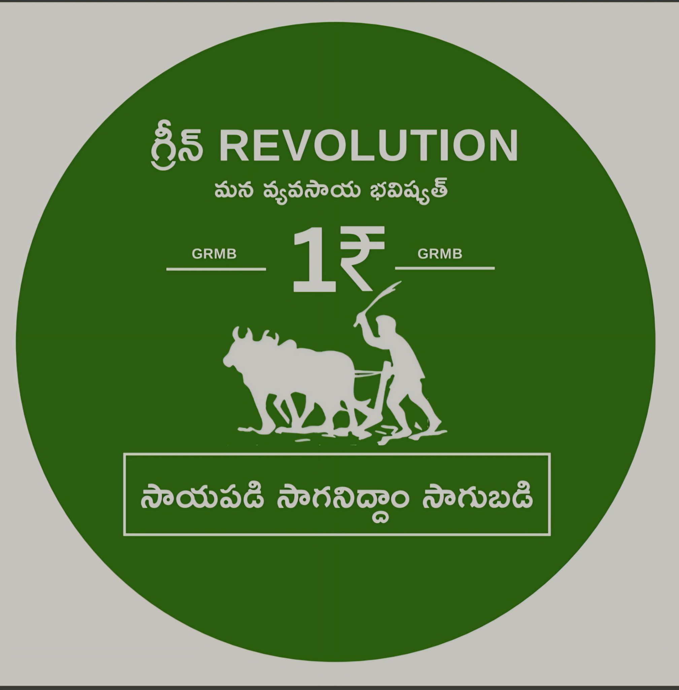

మన వ్యవసాయ భవిష్యత్ (GRMB Trust)
నేషనల్ క్రైమ్ రికార్డ్స్ బ్యూరో (NCRB) అధికారిక డేటా విశ్లేషణ
గత ఐదు సంవత్సరాలలో ఆంధ్రప్రదేశ్ స్థిరంగా అధిక సంఖ్యలో రైతు ఆత్మహత్యలను నమోదు చేస్తోంది. నేషనల్ క్రైమ్ రికార్డ్స్ బ్యూరో (NCRB) అధికారిక డేటా ప్రకారం 2020 మరియు 2022 మధ్య ఏటా సుమారు 889 నుండి 1,065 వరకు ఆత్మహత్యలు జరుగుతున్నాయి.
ఆంధ్రప్రదేశ్లోని వ్యవసాయ రంగంలో (సాగుదారులు మరియు వ్యవసాయ కార్మికులు సహా) ఆత్మహత్యలకు సంబంధించి NCRB మరియు ఇతర వనరుల నుండి వచ్చిన డేటా ఈ క్రింది గణాంకాలను అందిస్తుంది:
| సంవత్సరం | ఆత్మహత్యల సంఖ్య | అదనపు వివరాలు |
|---|---|---|
| 2019 | 1,029 ఆత్మహత్యలు | 839 మంది పురుషులు, 190 మంది మహిళలు. వీరిలో 438 మంది భూ యజమానులు, 306 మంది కౌలు రైతులు మరియు 401 మంది వ్యవసాయ కార్మికులు. |
| 2020 | 889 ఆత్మహత్యలు | సాధారణంగా వ్యవసాయ రంగంలో గత సంవత్సరం కంటే 14% తగ్గుదల. కొన్ని వర్గాలు ఈ సంవత్సరం రైతులు మరియు వ్యవసాయ కార్మికులలో 546 ఆత్మహత్యలను నివేదించాయి. |
| 2021 | 1,065 ఆత్మహత్యలు | 958 మంది పురుషులు, 107 మంది మహిళలు, 2020 నుండి 19% పెరుగుదల. ఆ సంవత్సరంలో ఈ సంఖ్య దేశంలోనే మూడవ అత్యధికం. |
| 2022 | 917 ఆత్మహత్యలు | రాష్ట్రంలో స్థిరంగా కొనసాగుతున్న సంక్షోభ పరిస్థితులను సూచిస్తుంది. |
| 2023 | 8.6% వాటా | భారతదేశంలోని మొత్తం రైతు ఆత్మహత్యలలో ఆంధ్రప్రదేశ్ 8.6% వాటాను కలిగి ఉందని నివేదించబడింది, ఆ సంవత్సరం వ్యవసాయ రంగంలో దేశవ్యాప్తంగా మొత్తం 10,786 మరణాలు సంభవించాయి. |
క్రింది menu tab క్లిక్ చేస్తే ఆ ఒక్క ఫీచర్ మాత్రమే కనిపిస్తుంది. Weather live API తో పనిచేస్తుంది; market prices official AGMARKNET/Data.gov.in data fetch చేస్తుంది; News auto-update అవుతుంది.
గ్రామం/మండలం/సిటీ పేరు ఎంటర్ చేస్తే live current weather, వర్షం అవకాశం, గాలి, humidity, 5-day forecast చూపిస్తుంది.
Official Data.gov.in / AGMARKNET live mandi data నుండి తాజా modal price చూపిస్తుంది. Internet అవసరం; API అందుబాటులో లేకపోతే official link వెంటనే open అవుతుంది.
బటన్ క్లిక్ చేసినప్పుడు మాత్రమే రైతులకు సంబంధించిన పథకాలు, అర్హత, పత్రాలు, apply steps చూపిస్తుంది.
లాభం: అర్హులైన రైతులకు ఆదాయ సహాయం.
పత్రాలు: Aadhaar, బ్యాంక్ అకౌంట్, భూమి వివరాలు.
ఎక్కడ: PM-KISAN portal / MeeSeva / రైతు సేవా కేంద్రం.
లాభం: వర్షం, కరువు, తెగులు వల్ల పంట నష్టం రక్షణ.
పత్రాలు: పంట వివరాలు, భూమి/కౌలు పత్రం, బ్యాంక్ వివరాలు.
Tip: పంట సీజన్ ప్రారంభంలోనే నమోదు చేయాలి.
లాభం: నీటి పొదుపు, దిగుబడి మెరుగుదల.
పత్రాలు: భూమి పత్రాలు, Aadhaar, bank passbook, quotation.
ఎక్కడ: Horticulture/Agriculture office.
లాభం: sprayer, power weeder, pump sets, tools పై సబ్సిడీ.
పత్రాలు: రైతు ID, Aadhaar, bank details, quotation.
ఎక్కడ: స్థానిక Agriculture Department / RBK.
లాభం: పంట ఖర్చులకు తక్కువ వడ్డీ short-term credit.
పత్రాలు: భూమి వివరాలు, Aadhaar, PAN, bank account.
ఎక్కడ: సమీప బ్యాంక్ బ్రాంచ్.
లాభం: మట్టి పరీక్ష ఆధారంగా సరైన ఎరువు సూచనలు.
పత్రాలు: రైతు వివరాలు, పొలం సర్వే వివరాలు.
Tip: ఎరువు ఖర్చు తగ్గించడానికి ఉపయోగపడుతుంది.
ఇది రైతు ప్రశ్నను పంట, దశ, లక్షణాలు, వాతావరణం ఆధారంగా విశ్లేషించి practical guidance ఇస్తుంది. ఇది front-end rule-based assistant; real AI API backend కలిపితే ఇంకా powerful అవుతుంది.
ఫోటో + లక్షణాలు + పంట ఆధారంగా practical diagnosis. Real AI API key ఉంటే image analysis కూడా connect అవుతుంది.
Donation template బటన్ క్లిక్ చేసినప్పుడు మాత్రమే UPI, donor form, counter కనిపిస్తుంది.
రైతులు, పంటలు, ప్రభుత్వ వ్యవసాయ ప్రకటనలు, మార్కెట్ & వాతావరణ హెచ్చరికలకు సంబంధించిన తాజా news auto-load అవుతుంది.
Principal amount, interest rate, time ఆధారంగా Simple Interest మరియు total amount లెక్కించండి.
అత్యవసర రైతు సహాయ నంబర్లు / సూచనలు.